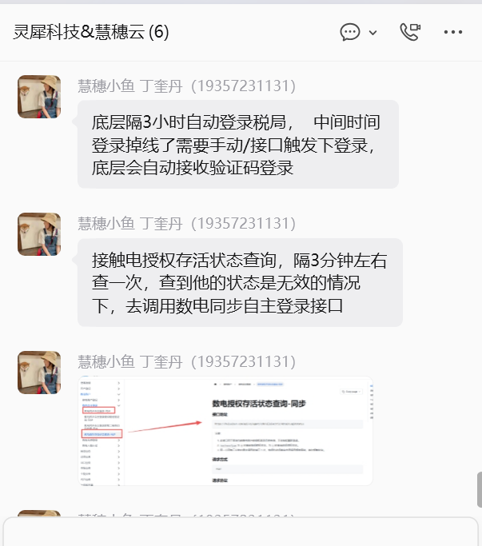
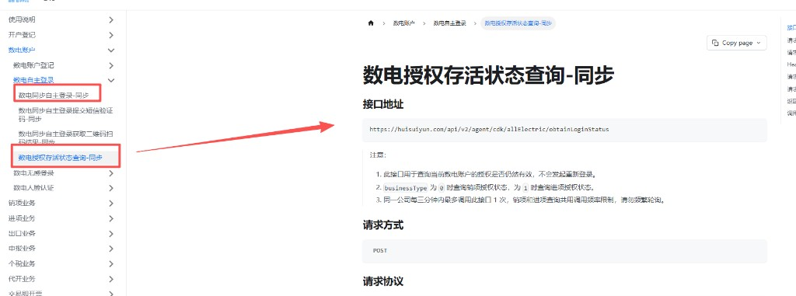

开票时调用慧穗云。对方接口改造后，税局登录掉线会导致开票失败。本次对接新的登录接口，在掉线时把登录补上，开票继续走现有接口。
慧穗云底层每隔 3 小时会自动登录税局。中间掉线时，由我们调接口触发登录，验证码由慧穗云底层自动接收并完成登录。


开票前先确认销项登录还在。无效就先登录，再走现有开票。
登录类型用账密短信还是扫码，待确认。文档里登录还可能返回「需上传短信验证码」或「需扫码」；供应商说明是验证码由底层自动接收。这两种要不要再调后续接口，待确认。
文档入口 https://cdk.huisuiyun.com/
访问账号 cdkadmin，密码 3g6wax7ECvs1PycHXKtoZ02BMm59R2N4
| 接口 | 本次 | |
|---|---|---|
| 查状态 | 数电授权存活状态查询-同步POST /api/v2/agent/cdk/allElectric/obtainLoginStatus |
新增调用 |
| 登录 | 数电同步自主登录-同步POST /api/v2/agent/cdk/allElectric/autonomous/sync/login |
新增调用 |
| 开票 | 现有慧穗云开票接口 | 不改 |
| 字段 | 取值 | |
|---|---|---|
| 查状态 | businessType | 0 销项。1 是进项，开票不用。 |
| 查状态 | 返回 data | 1 授权有效。0 未授权或已失效。查询成功时 code 为 200。 |
| 登录 | businessType | 1 销项。2 是进项。和查状态的编码不同。 |
| 登录 | loginType | 待确认 0 账密短信，1 扫码。 |
| 登录 | 返回 data.status | 1 登录成功，2 登录失败，3 需短信验证码，4 需税局 App 扫码。 |
请求头沿用现有慧穗云调用：X-Access-Token 必填。ISV 调用时 X-Tax-Token 填操作公司税号。登录的前置条件是该公司默认登记的登录方式为自主授权。